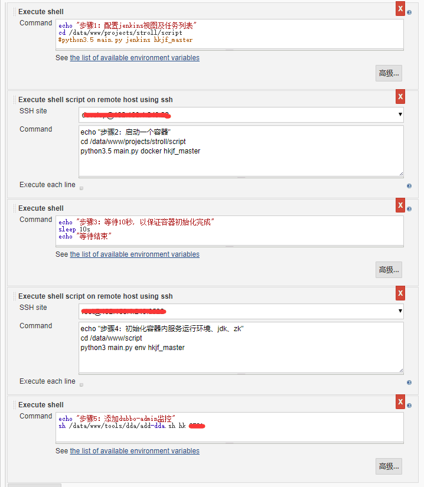
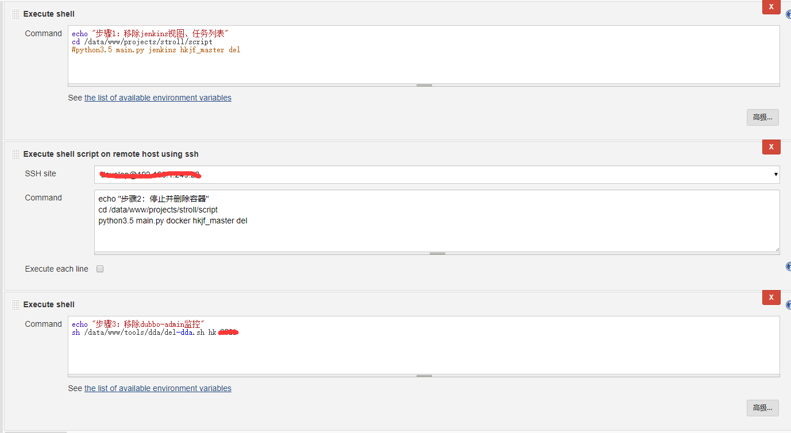

设计到软件的安装这里不在赘述，针对需要注意的细节会加以阐述!
场景
需求：
金服项目：包含5个服务提供者a,b,c,d,e；两个消费者web-a，web-b，分支数量3+，现搭建测试环境
目标：
各个服务无等待部署，随时创建任意分支测试环境
主机列表
- 服务器A-控制中心，部署jenkins, maven, jdk8+, git, python3及相关模块, 项目源码
- 服务器B-运行中心，运行docker及容器, 支持ssh远程连接
构建docker镜像(服务器B)
pull stroll源码并进入docker文件夹中运行如下命令创建运行容器的镜像
docker build -t "名称:版本" .
tips: "名称:版本"要与container_handler.py中run容器时使用的"名称:版本"保持一致，镜像配置开启ssh口令访问模式，默认口令密码"root/Docker@123"
配置jenkins(服务器A)
创建初始化测试环境任务:
环境构建步骤:
步骤1：创建jenkins视图、任务列表
步骤2：执行远程命令，在宿主主机创建容器
步骤3：等待10秒，给容器足够的启动时间
步骤4：调用容器中命令，完成项目运行的环境的初始化操作。
步骤5：添加zk端口到dubbo-admin监控中
构建新分支需更新如下内容:
1、更新所有步骤中设计的节点名称,如下图中hk_master就是节点名称也是
config.ini的节点(node)名称
2、更新步骤4中的ssh site 为最新环境的ssh连接凭证
3、更新步骤5中的最新环境的zk代理端口
完整配置如下(图1)：

创建删除测试环境任务:
移除运行环境:
步骤1：移除jenkins视图、任务列表
步骤2：移除远程宿主主机中运行的容器
步骤3：移除dubbo-admin中监控
完整配置如下(图2)：

tips:
1:图1中第一个“SSH site”是“服务A”的ssh连接，第二个“SSH site”是docker容器的ssh连接；图2中“SSH site”是“服务A”的ssh连接
2:任务构建后jenkins任务列表不能立马更新，需要进行"系统设置->读取配置"
完成上述配置，只需要动态更新config.ini中配置信息即可完成场景里的需求并达到预期目标